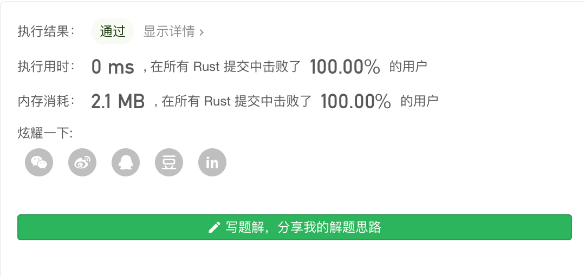

Leetcode第50题 Pow(x, n)
实现 pow(x, n) ，即计算 x 的 n 次幂函数。
示例 1:
输入: 2.00000, 10 输出: 1024.00000
示例 2:
输入: 2.10000, 3 输出: 9.26100
示例 3:
输入: 2.00000, -2 输出: 0.25000 解释: 2-2 = 1/22 = 1/4 = 0.25
说明:
- -100.0 < x < 100.0
- n 是 32 位有符号整数，其数值范围是 [−231, 231 − 1] 。
解题思路
一.暴力算法 直接使用for循环乘法,我们要处理 如果n次幂 幂是负数的情况,比如 2 的 -2 次 从数学我们可以知道 2的-2次 = 1/2 的 2 次 所以处理幂为负数的情况时只需要 用 1 除以以下就好了
二.快速幂 + 递归 这种方法的思想是 如果我们 求 2的n次 那么 我们可以拆成 log2^n * 2 只要先求一半。
换句话说 就是一个f(n) = f(n/2) * f(n/2) 这样的方程。
暴力算法
#![allow(unused_variables)] fn main() { pub fn my_pow(x: f64, n: i32) -> f64 { let mut n = n; let mut x = x; //幂为 0次方 if n == 0{ return 1.0; } //将 2 的 -2 次 转化成 1/2 的 2次 if n < 0{ x = 1.0/x; n = -n; } let mut res = x; for _ in 0..n-1{ res *= x; } res } }
但是暴力算法 在 幂为极大的情况 每次乘以 x 效率 还是不够的.
时间复杂度：O（n）
空间复杂度：O(1)
缺点：当幂比较大的时候,耗时严重。
快速幂 + 递归
递归 时我们要分开处理,n为偶数 或者n为奇数的情况,我们 把 2^n 次幂,对半 开,举个例子
如果是 2^5 次方 我们拆解的时候 把 5/2 = 2 那么 是奇数的情况 我们需要 额外的 再 补上一个2.
这种算法的核心 就是 把问题拆成 先递归求一半,然后把一半和另一半相乘。递归终止条件为 n == 1 也就是 幂为 1次直接返回x。
对于 某些特殊情况 比如 可以特殊处理 比如
| x的0次方 | 直接返回1 |
|---|---|
| 1的 x次方 | 直接返回1 |
| x 的 n次方 n为负数的情况 | x^n (n<0) = 1/x^(-n) |
| 上面一种情况的 延伸处理 x = -2.00000^ n= -2147483648 | -n = n 但是 转换的时候超过整数最大数了,所以需要转成 i64防止溢出 |
pub fn my_pow(x: f64, n: i32) -> f64 { let mut n:i64 = n as i64; let mut x = x; //幂为 0次方 或者 1的 n次都为 1 if n == 0 || x == 1.0{ return 1.0; } //将 2 的 -2 次 转化成 1/2 的 2次 if n < 0{ x = 1.0 / x; n = -n as i64; } my_helper(x,n) } pub fn my_helper(x: f64, n: i64) -> f64{ if n == 1 { return x; } let mut half = my_helper(x,n / 2); if n % 2 != 0{ return half * half * x; } return half * half; } fn main() { println!("{}",my_pow(2.0,-2147483648)); }
时间复杂度：O(log_n)
空间复杂度：O(1)
